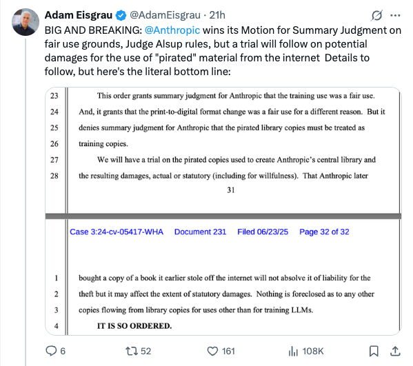
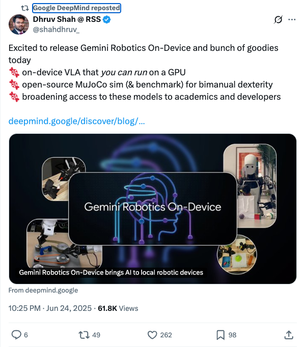
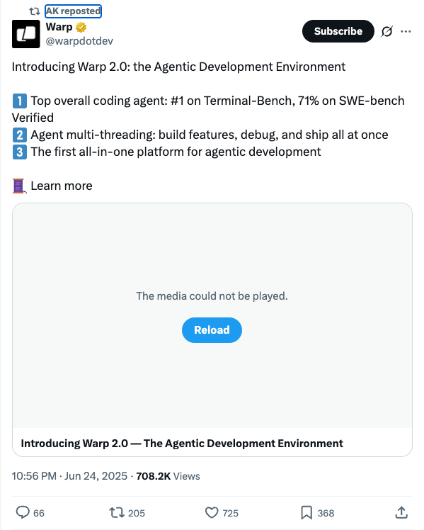
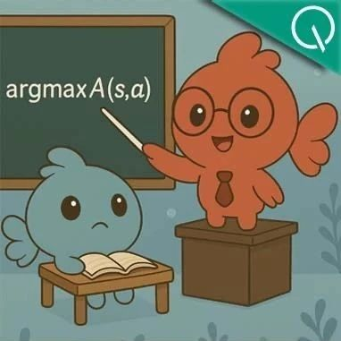
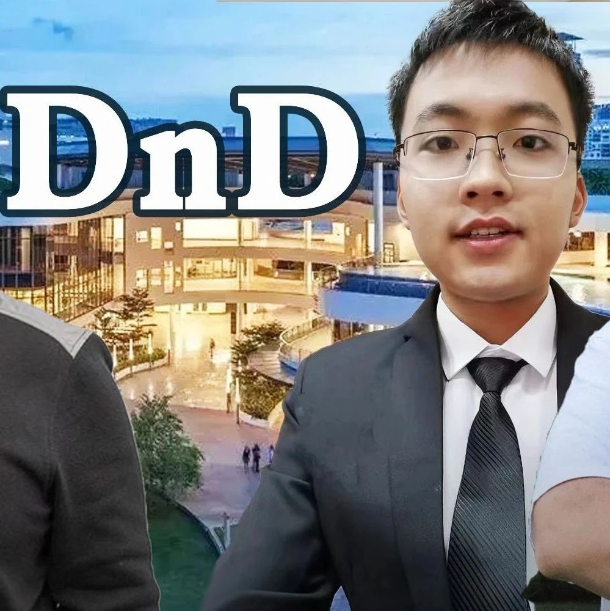

Twitter
mjbommar_Anthropic Wins Fair Use Summary Judgment, Still Faces Damages Trial
Published: 2025-06-24T11:58:06.000Z

Anthropic has achieved a significant legal victory, with Judge Alsup granting its motion for summary judgment on fair use grounds. This ruling indicates that Anthropic's use of certain materials was deemed permissible under fair use principles at this preliminary stage. However, despite this win, the company will still proceed to trial to determine potential damages related to the use of "pirated" material from the internet. This case is closely watched as it has significant implications for AI content generation and the evolving boundaries of copyright law.
DeepLearningAI_Disney Universal Sue Midjourney for Copyright Infringement
Published: 2025-06-24T01:00:05.000Z

Disney and Universal have filed a lawsuit against image generation company Midjourney, accusing it of training its models on their copyrighted content and reproducing unauthorized images. The studios claim Midjourney generated images of characters like Spider-Man and Iron Man, sometimes without explicit prompts. The suit seeks to halt the distribution of this content and demands damages potentially amounting to $150,000 per image.
GoogleDeepMind_Launches Gemini Robotics On-Device AI and Open-Source Tools
Published: 2025-06-24T14:25:11.000Z

Google DeepMind announced the launch of Gemini Robotics On-Device AI, aiming to bring AI capabilities to local robotic devices. This release includes an on-device VLA that can run on a GPU, and an open-source MuJoCo simulator and benchmark for bimanual dexterity, designed to broaden access to these models for academics and developers.
_akhaliq_Warp 2.0 Agentic Development Environment
Published: 2025-06-24T14:56:16.000Z

Warp has launched Warp 2.0, an innovative Agentic Development Environment. This platform is touted as the top overall coding agent, achieving first place on Terminal-Bench and 71% on SWE-bench. Warp 2.0 features verified agent multi-threading, enabling simultaneous feature building, debugging, and shipping. It aims to be the first all-in-one platform for agentic development, significantly boosting development efficiency.
mustafasuleyman_AI Models Evolve from "Chain of Thought" to "Chain of Debate"
Published: 2025-06-24T16:47:02.000Z

Mustafa Suleyman introduces "Chain of Debate" as the next evolution for AI, moving from a single model's "thinking out loud" to multiple models discussing, debating, debugging, and deliberating. He emphasizes that this collaborative approach, where "two heads are better than one," will lead to more advanced AI systems, signifying a shift from individual AI intelligence to collective AI intelligence.
corbtt_RL Sample Efficiency Breakthrough: GRPO Enables Qwen2.5-14B to Surpass Gemini Flash
Published: 2025-06-24T19:33:25.000Z

Kyle Corbitt reported exciting evidence of significant sample efficiency in Reinforcement Learning (RL). By applying GRPO to train a modified version of ART-E (agentic RAG task), Qwen2.5-14B was able to exceed Gemini 2.5 Flash performance with just one training scenario, and surpass O3 with 16 scenarios. This outcome greatly exceeded initial expectations for sample efficiency, highlighting RL's potential for highly efficient large model training.
wechat
Cache Me If You Can: How ManyKVsDoYouNeed for Effective Long-Context LMs?
Published: 2025-06-24T16:09:26.000Z

Princeton University's Danqi Chen's team has introduced innovative solutions to address the significant KV cache memory consumption in large language models (LLMs) during long-context inference. They proposed "KV footprint" as a unified metric and defined "critical KV footprint" to enable fair comparison of optimization methods while ensuring performance remains at least 90% of full attention. Their research identified and improved shortcomings of existing eviction methods, particularly the high peak memory issue of post-fill eviction. Building upon this, the team developed PruLong, an end-to-end optimization approach that intelligently learns which attention heads require full KV cache retention. PruLong effectively saves memory, achieving a 12% smaller KV footprint compared to previous methods, while maintaining strong long-context performance and recall task capabilities. This work offers a crucial pathway to alleviate the memory bottleneck in LLMs, facilitating their application in more demanding scenarios.
FilMaster: Bridging Cinematic Principles and Generative AI for Automated Film Generation
Published: 2025-06-24T16:09:26.000Z

FilMaster, developed by a Chinese team, is the first end-to-end AI system for automated film generation, capable of producing complete movies from text input and reference images. Its core innovations include the "Multi-shot Collaborative RAG Cinematic Language Design Module" and the "Audience-Centric Film Rhythm Control Module." The former leverages a vast library of 440,000 film clips to learn director-level cinematography, ensuring shot coherence and continuity. The latter optimizes audiovisual elements through simulated audience reviews and professional post-production workflows, enhancing emotional resonance and viewer engagement. Experimental results demonstrate FilMaster's significant superiority over existing methods in cinematic language expressiveness and rhythmic appeal, achieving an average 68.44% improvement in user studies and 58.06% in automated evaluations. This system represents a groundbreaking AI tool for professional-grade film production.
Synthetic Data Outperforms Human Data: Over 10% Absolute Performance Gain with Efficient LLM Fine-tuning via Task Definition Only
Published: 2025-06-24T16:09:26.000Z

Researchers from Peking University, MIT, and others have introduced the "Synthetic Data Reinforcement Learning" (Synthetic Data RL) framework, addressing the challenges of large language models' (LLMs) limitations in specialized domains and the high cost of human-annotated data for fine-tuning. This innovative framework requires only a task definition to generate high-quality, domain-specific synthetic data. It operates in three stages: knowledge-guided synthesis, difficulty adaptation, and high-potential sample selection combined with reinforcement learning. Experimental results demonstrate significant performance improvements, with absolute gains exceeding 10 percentage points across eight benchmarks in fields like mathematics, medicine, and law. The method substantially outperforms traditional supervised fine-tuning and existing synthetic data generation techniques, even matching or surpassing human-annotated data under equivalent data budgets. This framework enables efficient, human-annotation-free model customization, drastically reducing the cost of domain adaptation and laying a solid foundation for scalable AI applications.
7B Small Model Surpasses DeepSeek-R1: Weak Models Can Teach Strong Reasoning LLMs by Imitating Human Teachers | Transformer Author Team
Published: 2025-06-24T13:37:41.000Z

Sakana AI introduces a novel large language model (LLM) training methodology called Reinforcement Learning Teacher (RLT), which redefines the traditional approach where teacher models solve problems from scratch. This innovative method mandates that teacher models, akin to human educators, provide clear, step-by-step explanations based on known solutions, rather than independently deriving answers. Experimental results demonstrate that a 7B small model trained with RLT surpasses the 671B DeepSeek-R1 in imparting reasoning skills and can efficiently train student models several times its own size. This approach significantly enhances training efficiency, drastically reduces costs, and enables smaller models to effectively serve as teachers, offering a more economical and potent pathway for developing LLMs with robust reasoning capabilities.
OmniAvatar Open-Sourced! Alibaba Quake Releases New Audio-Driven Character Model
Published: 2025-06-24T06:54:35.000Z

Alibaba Quake team has open-sourced OmniAvatar, an innovative audio-driven full-body video generation model, addressing key challenges in existing techniques such as limited facial animation, lack of natural synchronization, and difficulties in generating fluid full-body movements. This novel model leverages a pixel-wise multi-level audio embedding strategy and a LoRA-based training method, which collectively enhance lip-sync precision and natural motion expression. OmniAvatar demonstrates superior performance in both facial and half-body video generation compared to current state-of-the-art models. Furthermore, it supports precise control via text prompts, enabling diverse applications including podcasts, human interaction, and singing, and offers the ability to control character emotions. Despite these significant advancements in virtual human video generation, the model still presents limitations regarding long video consistency, complex multi-character text control, and inference speed, which require further optimization.
LLMs Enter the "Drag-and-Drop Era"! Customize Large Models in Seconds with Just a Prompt, Boosting Efficiency by 12,000x
Published: 2025-06-24T04:36:19.000Z

Researchers from the National University of Singapore and other institutions have introduced "Drag-and-Drop LLMs" (DnD), a novel prompt-based parameter generator enabling training-free adaptive fine-tuning for large language models. DnD leverages a lightweight text encoder and a cascaded super-convolutional decoder to generate task-specific LoRA weight matrices in mere seconds, solely from unlabeled task prompts, effectively bypassing the traditional gradient descent process. This innovative method boasts a computational overhead 12,000 times lower than conventional full fine-tuning. Furthermore, it demonstrates a remarkable 30% performance improvement over trained LoRA models in zero-shot learning benchmarks and exhibits robust generalization capabilities across diverse domains. DnD offers a highly efficient, flexible, and superior alternative for rapid LLM specialization, significantly accelerating the model customization process.
GitHub
Claude Code Router
Published: 2025-06-25T09:43:47Z

Claude Code Router is a request routing tool specifically designed for Claude Code, enabling users to flexibly distribute code generation requests to various LLM models with high customization. It achieves model routing through configuration, allowing selection of the optimal model based on task types such as background tasks, reasoning, or long-context processing, thereby effectively reducing costs and enhancing performance. The tool also offers a plugin mechanism for extended functionality and seamless integration with GitHub Actions, providing an efficient and economical solution for AI-driven development workflows.
leaked-system-prompts
Published: 2025-06-11T11:08:13Z

This GitHub repository is a dedicated collection of leaked system prompts sourced from various widely used Large Language Model (LLM) based services. It functions as a community-driven platform, inviting contributions of such prompts, with a clear protocol for submission: all entries must be accompanied by verifiable sources or reproducible examples to ensure authenticity. The repository explicitly warns against the inclusion of sensitive commercial source code to prevent potential DMCA issues, a critical consideration given its frequent citation in academic research papers. This highlights its significant role as a valuable resource for understanding and analyzing the underlying instructions guiding prominent LLM applications, contributing to the broader study of prompt engineering and AI system behavior.
Machine Learning From Scratch
Published: 2019-10-18T21:42:16Z

This GitHub repository offers Python implementations of various fundamental machine learning models and algorithms from scratch. Its primary goal is to transparently and accessibly illustrate their inner workings, rather than focusing on computational optimization. The project spans four major domains: supervised learning, unsupervised learning, reinforcement learning, and deep learning, encompassing classic algorithms such as Decision Trees, Support Vector Machines, K-Means, GANs, and DQNs. Through numerous examples like polynomial regression, CNN image classification, DBSCAN clustering, generative adversarial networks for digit generation, and deep Q-networks, it provides an invaluable resource for learners to deeply understand core machine learning concepts and algorithm implementations.
huggingface
OmniGen2: Exploration to Advanced Multimodal Generation
Published: 2025-06-23T17:38:54.000Z

In this work, we introduce OmniGen2, a versatile and open-source generative
model designed to provide a unified solution for diverse generation tasks,
including text-to-image, image editing, and in-context generation. Unlike
OmniGen v1, OmniGen2 features two distinct decoding pathways for text and image
modalities, utilizing unshared parameters and a decoupled image tokenizer. This
design enables OmniGen2 to build upon existing multimodal understanding models
without the need to re-adapt VAE inputs, thereby preserving the original text
generation capabilities. To facilitate the training of OmniGen2, we developed
comprehensive data construction pipelines, encompassing image editing and
in-context generation data. Additionally, we introduce a reflection mechanism
tailored for image generation tasks and curate a dedicated reflection dataset
based on OmniGen2. Despite its relatively modest parameter size, OmniGen2
achieves competitive results on multiple task benchmarks, including
text-to-image and image editing. To further evaluate in-context generation,
also referred to as subject-driven tasks, we introduce a new benchmark named
OmniContext. OmniGen2 achieves state-of-the-art performance among open-source
models in terms of consistency. We will release our models, training code,
datasets, and data construction pipeline to support future research in this
field. Project Page: https://vectorspacelab.github.io/OmniGen2; GitHub Link:
https://github.com/VectorSpaceLab/OmniGen2
LongWriter-Zero: Mastering Ultra-Long Text Generation via Reinforcement
Learning
Published: 2025-06-23T16:59:02.000Z

Ultra-long generation by large language models (LLMs) is a widely demanded
scenario, yet it remains a significant challenge due to their maximum
generation length limit and overall quality degradation as sequence length
increases. Previous approaches, exemplified by LongWriter, typically rely on
''teaching'', which involves supervised fine-tuning (SFT) on synthetic
long-form outputs. However, this strategy heavily depends on synthetic SFT
data, which is difficult and costly to construct, often lacks coherence and
consistency, and tends to be overly artificial and structurally monotonous. In
this work, we propose an incentivization-based approach that, starting entirely
from scratch and without relying on any annotated or synthetic data, leverages
reinforcement learning (RL) to foster the emergence of ultra-long, high-quality
text generation capabilities in LLMs. We perform RL training starting from a
base model, similar to R1-Zero, guiding it to engage in reasoning that
facilitates planning and refinement during the writing process. To support
this, we employ specialized reward models that steer the LLM towards improved
length control, writing quality, and structural formatting. Experimental
evaluations show that our LongWriter-Zero model, trained from Qwen2.5-32B,
consistently outperforms traditional SFT methods on long-form writing tasks,
achieving state-of-the-art results across all metrics on WritingBench and
Arena-Write, and even surpassing 100B+ models such as DeepSeek R1 and
Qwen3-235B. We open-source our data and model checkpoints under
https://huggingface.co/THU-KEG/LongWriter-Zero-32B
OAgents: An Empirical Study of Building Effective Agents
Published: 2025-06-17T17:59:02.000Z

Recently, Agentic AI has become an increasingly popular research field.
However, we argue that current agent research practices lack standardization
and scientific rigor, making it hard to conduct fair comparisons among methods.
As a result, it is still unclear how different design choices in agent
frameworks affect effectiveness, and measuring their progress remains
challenging. In this work, we conduct a systematic empirical study on GAIA
benchmark and BrowseComp to examine the impact of popular design choices in key
agent components in a fair and rigorous manner. We find that the lack of a
standard evaluation protocol makes previous works, even open-sourced ones,
non-reproducible, with significant variance between random runs. Therefore, we
introduce a more robust evaluation protocol to stabilize comparisons. Our study
reveals which components and designs are crucial for effective agents, while
others are redundant, despite seeming logical. Based on our findings, we build
and open-source OAgents, a new foundation agent framework that achieves
state-of-the-art performance among open-source projects. OAgents offers a
modular design for various agent components, promoting future research in
Agentic AI.
4D-LRM: Large Space-Time Reconstruction Model From and To Any View at
Any Time
Published: 2025-06-23T17:57:47.000Z

Can we scale 4D pretraining to learn general space-time representations that
reconstruct an object from a few views at some times to any view at any time?
We provide an affirmative answer with 4D-LRM, the first large-scale 4D
reconstruction model that takes input from unconstrained views and timestamps
and renders arbitrary novel view-time combinations. Unlike prior 4D approaches,
e.g., optimization-based, geometry-based, or generative, that struggle with
efficiency, generalization, or faithfulness, 4D-LRM learns a unified space-time
representation and directly predicts per-pixel 4D Gaussian primitives from
posed image tokens across time, enabling fast, high-quality rendering at, in
principle, infinite frame rate. Our results demonstrate that scaling
spatiotemporal pretraining enables accurate and efficient 4D reconstruction. We
show that 4D-LRM generalizes to novel objects, interpolates across time, and
handles diverse camera setups. It reconstructs 24-frame sequences in one
forward pass with less than 1.5 seconds on a single A100 GPU.
CommVQ: Commutative Vector Quantization for KV Cache Compression
Published: 2025-06-23T17:50:11.000Z

Large Language Models (LLMs) are increasingly used in applications requiring
long context lengths, but the key-value (KV) cache often becomes a memory
bottleneck on GPUs as context grows. To address this, we propose Commutative
Vector Quantization (CommVQ) to significantly reduce memory usage for
long-context LLM inference. We first introduce additive quantization with a
lightweight encoder and codebook to compress the KV cache, which can be decoded
via simple matrix multiplication. To further reduce computational costs during
decoding, we design the codebook to be commutative with Rotary Position
Embedding (RoPE) and train it using an Expectation-Maximization (EM) algorithm.
This enables efficient integration of decoding into the self-attention
mechanism. Our approach achieves high accuracy with additive quantization and
low overhead via the RoPE-commutative codebook. Experiments on long-context
benchmarks and GSM8K show that our method reduces FP16 KV cache size by 87.5%
with 2-bit quantization, while outperforming state-of-the-art KV cache
quantization methods. Notably, it enables 1-bit KV cache quantization with
minimal accuracy loss, allowing a LLaMA-3.1 8B model to run with a 128K context
length on a single RTX 4090 GPU. The source code is available at:
https://github.com/UMass-Embodied-AGI/CommVQ.
Audit & Repair: An Agentic Framework for Consistent Story Visualization
in Text-to-Image Diffusion Models
Published: 2025-06-23T17:59:29.000Z

Story visualization has become a popular task where visual scenes are
generated to depict a narrative across multiple panels. A central challenge in
this setting is maintaining visual consistency, particularly in how characters
and objects persist and evolve throughout the story. Despite recent advances in
diffusion models, current approaches often fail to preserve key character
attributes, leading to incoherent narratives. In this work, we propose a
collaborative multi-agent framework that autonomously identifies, corrects, and
refines inconsistencies across multi-panel story visualizations. The agents
operate in an iterative loop, enabling fine-grained, panel-level updates
without re-generating entire sequences. Our framework is model-agnostic and
flexibly integrates with a variety of diffusion models, including rectified
flow transformers such as Flux and latent diffusion models such as Stable
Diffusion. Quantitative and qualitative experiments show that our method
outperforms prior approaches in terms of multi-panel consistency.